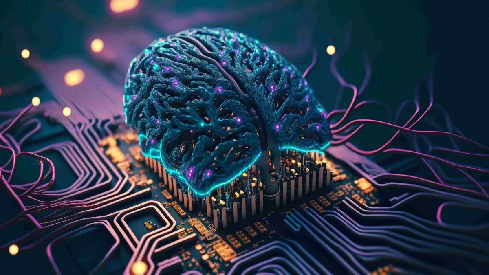

Що таке Штучний інтелект?
Штучний інтелект (ШІ) — це провідна галузь комп'ютерних наук, яка займається створенням систем, здатних виконувати завдання, що зазвичай вимагають людського розуму. Це включає машинне навчання, розпізнавання мови, прийняття рішень та складне візуальне сприйняття. Сьогодні ця технологія дуже швидко розвивається, пропонуючи інноваційні рішення для багатьох галузей.
Розвиток нейронних мереж багато в чому завдячує роботі з масивами даних (Big Data). Розробники використовують складні математичні моделі, наприклад, розраховуючи зміну параметрів: Wnew = Wold + ΔW. Раніше багато хто побоювався, що алгоритми повністю замінять фахівців, але насправді ШІ ефективно доповнить нашу роботу, автоматизуючи рутинні процеси та залишаючи час для творчості.
Основні сфери застосування
- Медицина (автоматичний аналіз знімків та допомога в діагностиці).
- Автомобілебудування (розробка систем автопілота та комп'ютерного зору).
- Кібербезпека (швидке виявлення кіберзагроз та аномалій у мережі).
- Програмування (розумне автодоповнення коду, пошук вразливостей).

Додаткові ресурси
Більше базової інформації можна знайти на сторінці Вікіпедії про ШІ.
Також ви можете відвідати офіційний сайт компанії OpenAI (посилання відкриється у новій вкладці).
Також ви можете ознайомитися з додатковою сторінкою: Професія Python-розробника.